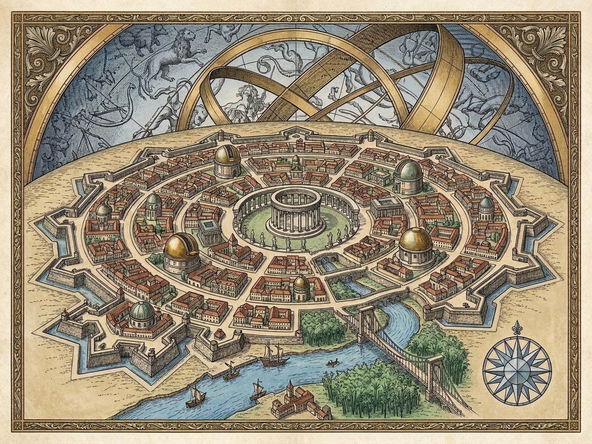
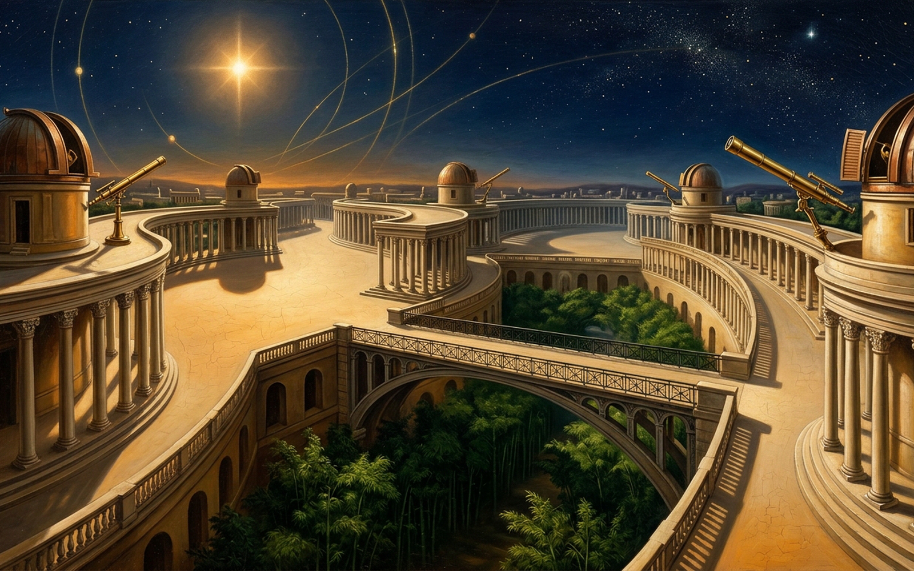

ANDRIAPlanetary Boulevards & Reciprocal Celestial VaultAscendant of Alpheratz — Harbor Manifests & Astrolabe CalibrationSpaceOrbiting43.2°SplitStreetsObservatoryMMutedPPlatesRResetPlanetary Street OrbitsMercury-Venus Inner Crossing · CepheidsCepheids PlazaAntares CourtAlpheratz MoleCapella PalaestraBrass Observatory DomeRA 062° · Dec +47°0 / 4 NoveltiesTVault ViewCluster NovaPlanet NebulaSaturn RingsMilky Way ArcPrudence Balance ScaleUnweighed · 0.84 ProposedConfidence 82%Prudence 86%Self-Confidence (≥55%)Civic Prudence (≥65%)WWeigh RiskXAttempt Reckless ChangeCitizens weigh risks for themselves, the city, and all worlds before any decree (0 blocked).1 Suspended Street over Bamboo GroveUnweighedMercury-Venus Crossing ↔ Star-Cluster Nova (Cepheids)Weigh RiskEnact1 Deliberate & Enact2 Shadow-Theater Replacing KennelsUnweighedMars Arc (Antares Court) ↔ Nebula Condensing into PlanetWeigh RiskEnact2 Deliberate & Enact3 Statue of Thales at PortUnweighedJupiter Quay (Alpheratz Mole) ↔ Saturn Ring PerturbationWeigh RiskEnact3 Deliberate & Enact4 Toboggan Slide at Gymnastics SchoolUnweighedSaturn Terrace (Capella Palaestra) ↔ Milky Way ExpansionWeigh RiskEnact4 Deliberate & EnactArchival Plates of AndriaChorographic Planetary Boulevards & Reciprocal Observatory VedutaDiptychChorographic PlanObservatory VedutaZLoupe 1.8xEscClose

PENDING_IMAGE_GENERATOR_QUOTA — Royal Copperplate Engraving Queued for 2026-11-11T06:21:14ZTabula I · Chorographic Planimetry of the Seven Planetary Boulevards & Star Plazas

PENDING_IMAGE_GENERATOR_QUOTA — Royal Copperplate Engraving Queued for 2026-11-11T06:21:14ZTabula II · Specula Astronomica & Suspended Bamboo Viaduct Beneath the Vault